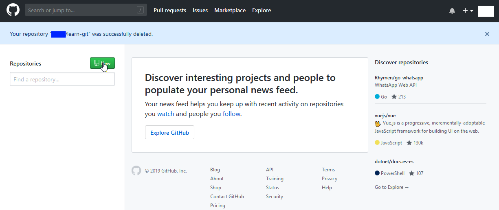
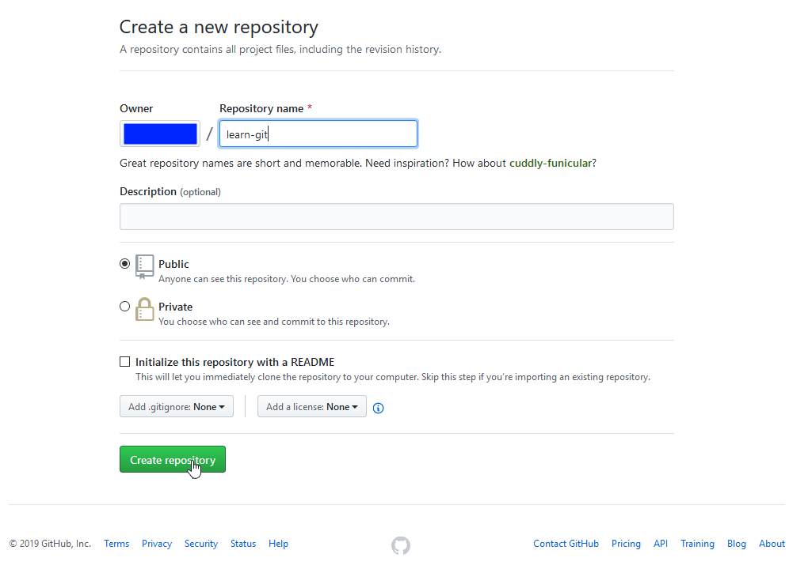
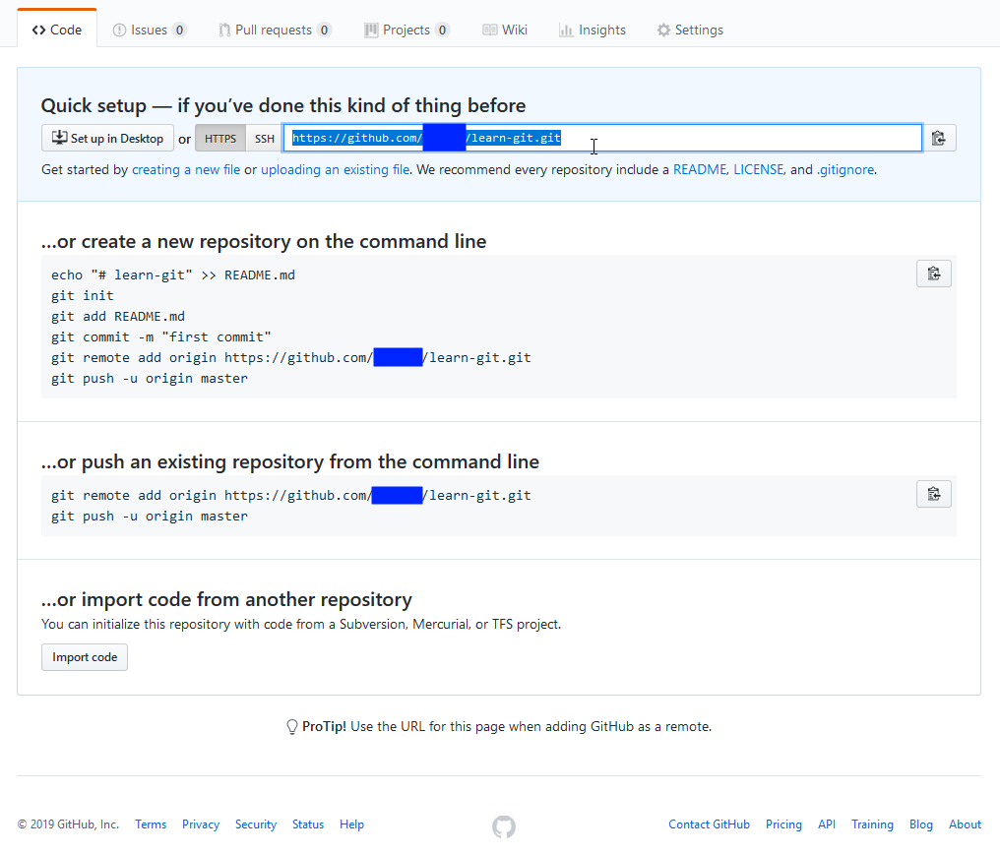
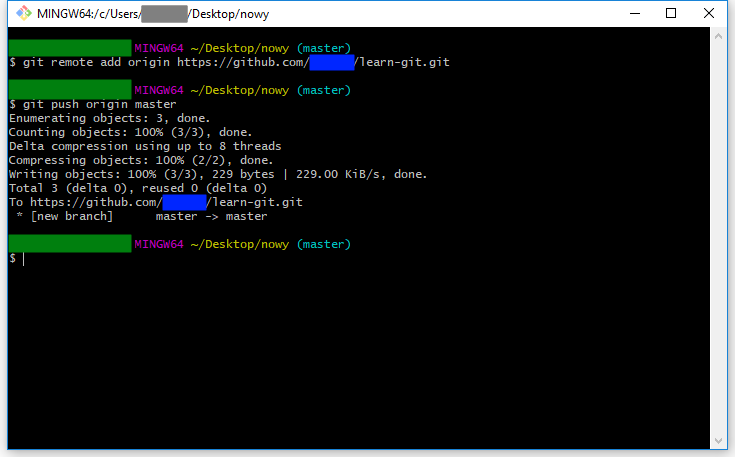
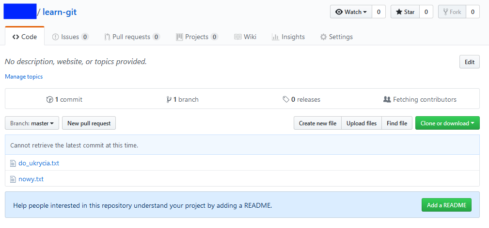
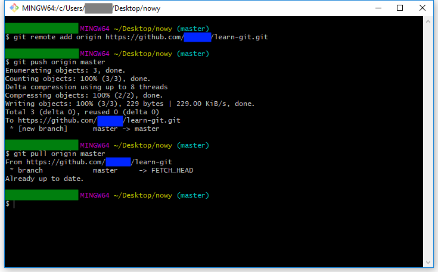
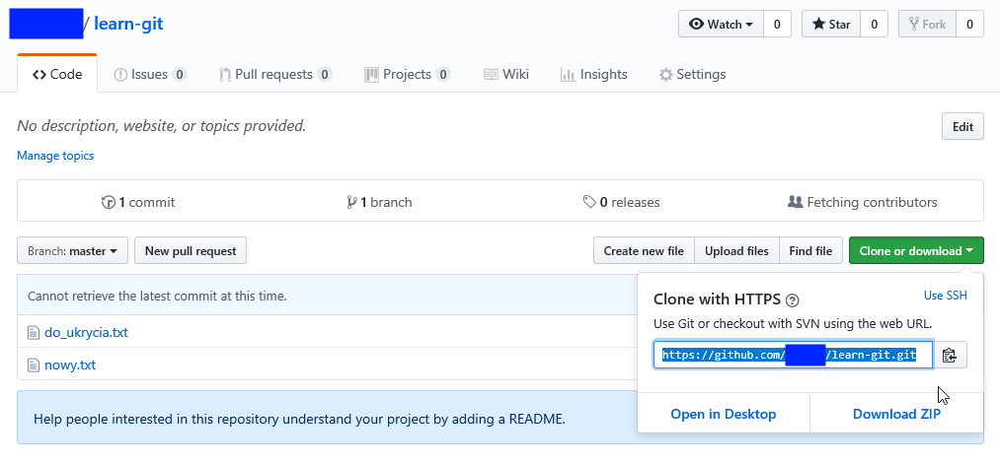
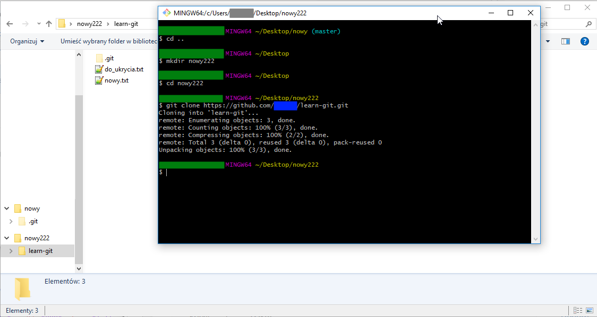

Tworzenie nowego repozytorium na githubie
- tworzymy nowy projekt
- nadajemy nazwę
- kopiujemy ścieżkę https projektu



Obsługa repozytorium na githubie
- podłączamy repozytorium lokalne do repozytorium zdalnego
git remote add origin https://github.com/_nazwa_użytkownika_/learn-git.git
- wgrywamy lokalne repozytorium na serwer
git push origin master
- sprawdzamy na stronie co się stało po stronie serwera
- pobieramy wersję z serwera
git pull origin masterw tym przypadku nic się nie pobrało bo lokalna i zdalna wersja były takie same



Pobieranie repozytorium z githuba
- pobieramy adres ze strony githuba
- tworzymy nowy folder i wchodzimy do niego
- pobieramy wersję z serwera do nowego katalogu
git clone https://github.com/_nazwa_użytkownika_/learn-git.git

